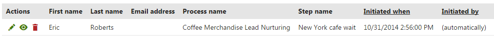
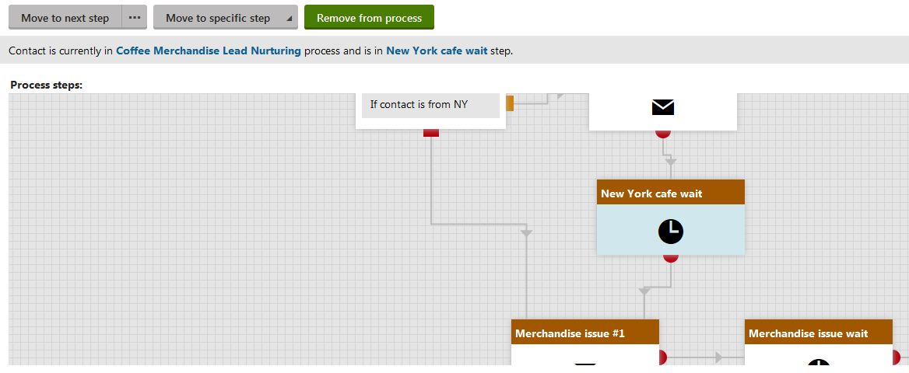
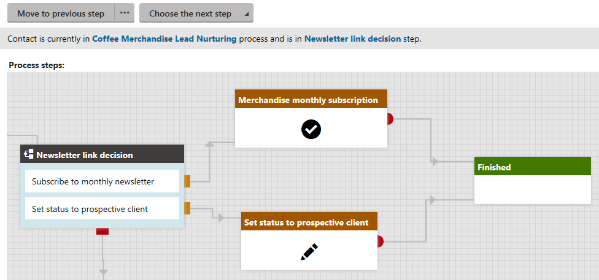
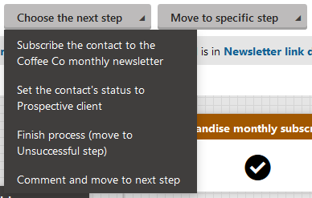

Marketing automation walkthrough - Managing the process
You can now test the sample automation process that you created. You can run the process by creating a contact that meets the trigger's conditions.
Creating a contact to trigger the process
Create a contact that meets the trigger's condition to initiate the process:
Open the Contact management application.
Click New contact.
Modify the values as follows:
First name: Eric
Last name: Roberts
Email address: your email address
City: New York
Country: USA
State: New York
Click Save.
This page is part of a walkthrough that is meant to be read sequentially from beginning to end.
Previous page: Designing the process
Kentico EMS required
Features described on this page require the Kentico EMS license.
Managing the process using the Marketer role
You can fully administer the process through the user account that you used to create the process:
Open the My pending contacts application.
You can see that the process has been automatically started.

Edit (
 ) the contact.
) the contact.
You can see the current state of the process for the given contact. The Move to next step, Move to specific step and Remove process buttons are available to you.

Managing an instance of the sample automation process
Tip: If you haven't set the wait steps for a short time interval, use the Move to specific step button to move to the newsletter steps manually.
Administering the process using the Process administrator role
Once the instance of the process is in the Newsletter link decision step, you can manage the instance through the Process administrator role.
Log in to Kentico as Matt.
Go to http://<yourdomain>/Admin and enter Matt as the user name.
Open the My pending contacts application.
Open the Pending contacts tab.
Edit (
) the contact.You can see the process is in the Newsletter link decision step. Note that the contact only stays in the steps if he meets both the conditions.

Click Choose the next step -> Set the contact's status to prospective client button.
The process finishes.

Switch to the Contacts tab.
Edit (
) the contact that you created for the process.You can see that the contact's status changed to Prospective client.
You have created a complete automation process and tested some of the functionality that you can use in your own marketing automation processes.